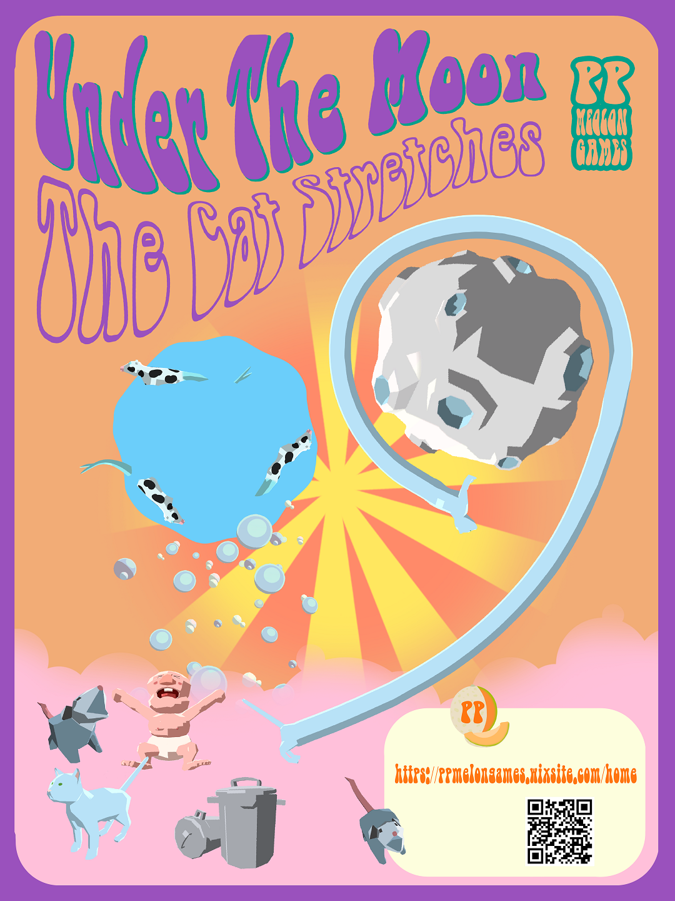
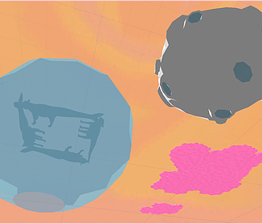

Under the Moon, the Cat Stretches
Under the Moon, the Cat Stretches is a Virtual Reality physics-based sandbox game made from Unity designed to evoke the nostalgic feelings of fun we've had as children. I designed the levels and worked on game assets on Maya, and hosted usability testing sessions to gain user feedback. Here is our website so you can learn more about the game. The game received positive critiques from industry veterans from thatgamecompany. Here is the trailer:
One of the main challenges we faced in the development of this game was movement. How can the player move with such limited space? We combatted this by using teleportation as the main method of movement. This issue arose again when we wanted the player to be taken up by a bubble. We solved this by incorporating a translucent blue shader so the player sees less of the world, thus decreasing the sense of vertigo.
